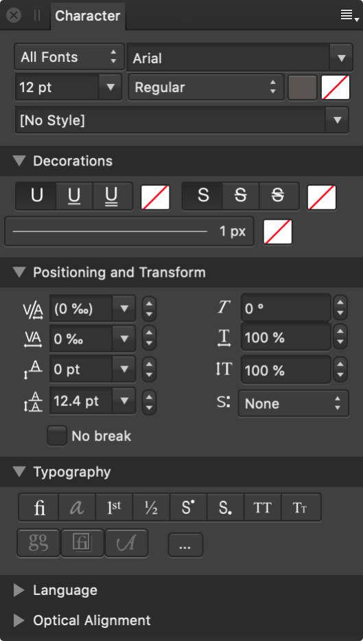

The Character panel allows you to apply local formatting to individual letters, words, sentences and paragraphs as well as entire stories.
About the Character panel
The Character panel is unique in providing the ability to:
List typefaces within particular collections (including Missing Fonts).
Apply double underline or strikethrough as well as controlling their color independently of text color.
Set kerning and shearing.
Apply horizontal and vertical scaling.

The Character panel.
The following panel options are available:
Collection—sets the typefaces which are accessible via the panel. Select from the pop-up menu.
Typeface—sets the typeface for the selected text. Select from the pop-up menu.
Size—controls the point size of characters.
Font—controls which typeface style is applied to the selected text.
Font color—sets the color of the text. Select from the pop-up panel.
Background color—sets the color applied behind the selected text (i.e., creating a highlight effect). Select from the pop-up panel.
Text Style—allows a character text style to be applied to selected text.
Decorations
Underline—select whether the text has No Underline or a single or double underline.
Underline color—sets the color of the text underline. If this is set to 'None', the underline color will match the Font's color. Select from the pop-up panel.
Strikethrough—select whether the text has No Strikethrough or a single or double strikethrough.
Strikethrough color—sets the color of the text strikethrough. If this is set to 'None', the strikethrough color will match the Font's color. Select from the pop-up panel.
Positioning and Transform
Kerning—controls the kerning (distance) between characters. Auto will automatically kern characters by default. Positive values give expanded kerning, negative values give condensed kerning. This setting is expressed in permilles, i.e. thousandths of an em space.
Tracking—controls the spacing between characters. This setting is expressed in permilles, i.e. thousandths of an em space.
Baseline—controls where characters naturally sit on a line. Increasing the value lowers the baseline, decreasing the value raises the baseline.
Leading Override—applies local override to selected text to increase the leading with regard to the paragraph’s leading.
Shear—controls the extent of text slant. Positive values will tilt text to the right, negative values will tilt text to the left.
Horizontal Scale—stretches the characters and spacing width with regard to point size.
Vertical Scale—stretches the characters with regard to point size.
Superscript—converts text characters to superscript, i.e. characters are set higher than neighboring characters and font size is decreased.
Subscript—converts text characters to subscript, i.e. characters are set lower than neighboring characters and font size is decreased.
Typography
Standard Ligatures—applies any available typeface ligatures to the selected text.
Contextual Alternatives—applies any alternative typeface designs available for glyphs depending on their relative position within a word or with respect to neighboring glyphs.
Ordinals—automatically applies a superscript to letters which are part of an ordinal number.
Fractions—dynamically converts fractions into a single glyph.
Superscript—converts text characters to superscript, i.e. characters are set higher than neighboring characters and font size is decreased.
Subscript—converts text characters to subscript, i.e. characters are set lower than neighboring characters and font size is decreased.
All Caps—displays all selected text as upper case (or small caps, if Small Caps option selected).
Small Caps—displays lower case letters as miniature upper case.
Language
Choose a language (for spell check and reference purposes). Select from the pop-up menu.
Optical Alignment
Optical Alignment determines how certain characters in your document (for example, punctuation marks or particular letters) will fit in relation to the text frame; this can be used to automatically extend lines beginning or ending with certain characters when text frames are snapped to page margin. Adjust the settings to ensure the characters you choose are aligned to your liking.